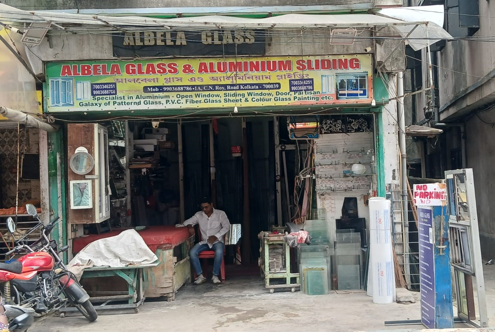
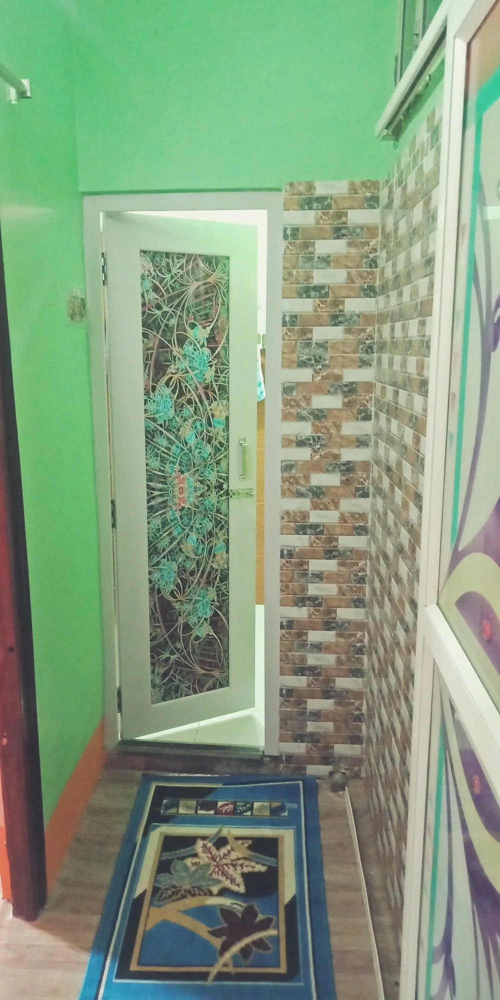
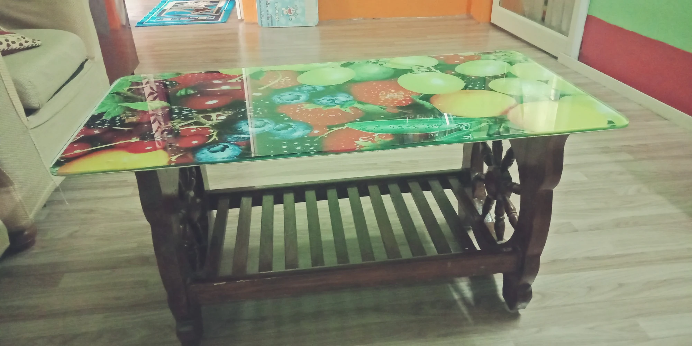

Home
Hi there! I'm MD Alauddin, and my heart has always been drawn to the beautiful, delicate world of glasswork. Ever since I was a child, I've been mesmerized by how light dances through glass, creating a magical interplay of colors and reflections. That early fascination turned into a deep passion, and now, I’m fortunate enough to turn that passion into my life's work. For me, glass isn’t just a material—it’s a way to express my creativity and bring a little bit of wonder into the world.I take great pride in the work I do, paying attention to every detail as I craft and shape each piece of glass. Whether I’m working on a simple vase or an intricate decorative piece, I pour my heart into making sure every curve, edge, and line is just right. It’s incredibly satisfying to see an idea take shape in my hands, transforming from a concept into something real and tangible. Every piece I create feels like a small part of me—a reflection of my love for this art and my commitment to sharing it with others.
But glasswork isn’t just about skill for me; it’s about connection. It’s about taking an idea—whether it’s mine or someone else’s—and bringing it to life in a way that resonates with people. I love the challenge of pushing the boundaries of what glass can do, experimenting with new techniques, and finding ways to make each piece unique. My goal is always to create something that not only looks beautiful but also tells a story and evokes a sense of wonder.
At the end of the day, glasswork is more than just a job—it’s a part of who I am. It’s about finding beauty in the fragile, the delicate, and the everyday, and turning it into something that can be cherished. As I continue on this journey, I’m excited to keep exploring, learning, and creating, always with the hope that my work will bring a little bit of joy and inspiration to those who experience it.
About
My name is MD ALAUDDIN, and I am passionate about the art of glasswork. Working with glass allows me to create beautiful and functional pieces that reflect both creativity and craftsmanship. Each day in my workshop is a journey of precision and imagination, where molten glass transforms into delicate forms under my skilled hands. From intricate sculptures to practical household items, I find joy in every step of the glassmaking process. My dedication to this ancient craft drives me to constantly refine my techniques and explore new possibilities, ensuring that each piece I create is a testament to both tradition and innovation in the world of glass art.. I can do many works of Glass such as:
- Aluminium Sliding Window, Door, Partition
- Toughened Glass Door, Partiton
- Shower Cubicles (Sell/Service)
- Iron Window Glass Clay & Repotting
- Glass Selicon
- Glass Clay
- Iron Window Handle & Stray
- Glass Flim Pasting
- Aluminium Sliding Rollear Change
- Custom Touch Mirror Design(Mirror with led light and a touch Sensor)
- Glass Shelf (Corner/Middle)
- Acrylic Fiver Sheet
- Fiver Mirror
- Bathroom Mirror
- Bathroom Cabinet with Mirror
- Glass Etching Design
- Old Touch Mirror (Service)
and many more things.
Contact
EMAIL: alauddinmd915@gmail.com
PHONE: +91 9903688786
WHATSAPP: +91 9903688786
ADDRESS: 1A CHANDRA NATH ROY ROAD KOLKATA- 700039, WEST BENGAL, INDIA
Images



